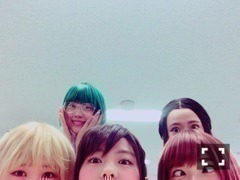
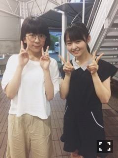
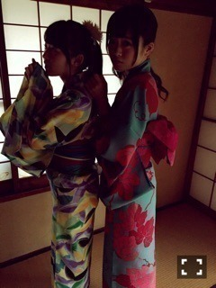

| 2015/06 22 Mon | 夜な夜な水彩。649回目 |

お久しぶりです！
乃木中コケ探訪が始まる前に更新。
Mステ見たかな？
命は美しい歌ったよ〜
実は初めてのMステでした！
新曲も披露できたらいいなあ、、
2ND YEAR BIRTHDAY LIVE DVD
手に入れた！！
特典映像に伝説の←
休憩中のまりっか'17の
裏側が映ってたりしています。
かなり緊張してます。
懐かしい＼(^o^)／

18日から舞台じょしらくが始まり、
今日、チームらは
3公演目が終わりました。
本番が始まってから、
よりチームららしさが
出てきている気がします！
難しい、でも、楽しい
この楽しいと思う気持ちを大切に。
今日は落語の日でした。
難しいです。
舞台オリジナルの創作落語。
もう一回したかったな>_<
リトルグリーモンスターの
manakaちゃんが観に来てくれた！
ありがとうございました！
私のこと好いてくれたみたいで
恐縮です...
会ってすぐ、
話が合いそうだと感じた！
14歳に見えないヽ(ﾟ､｡)ﾉ
また会いたいなあ

発売中の月刊ヤングマガジン
じょしらくメンバー載ってます！
浴衣！夏だねえ
みーてーねー

チームらはあと2回。
一公演一公演大切に。
最後まで突っ走っていきます。
まりか
コメント(740)
2015/06/22 00:00